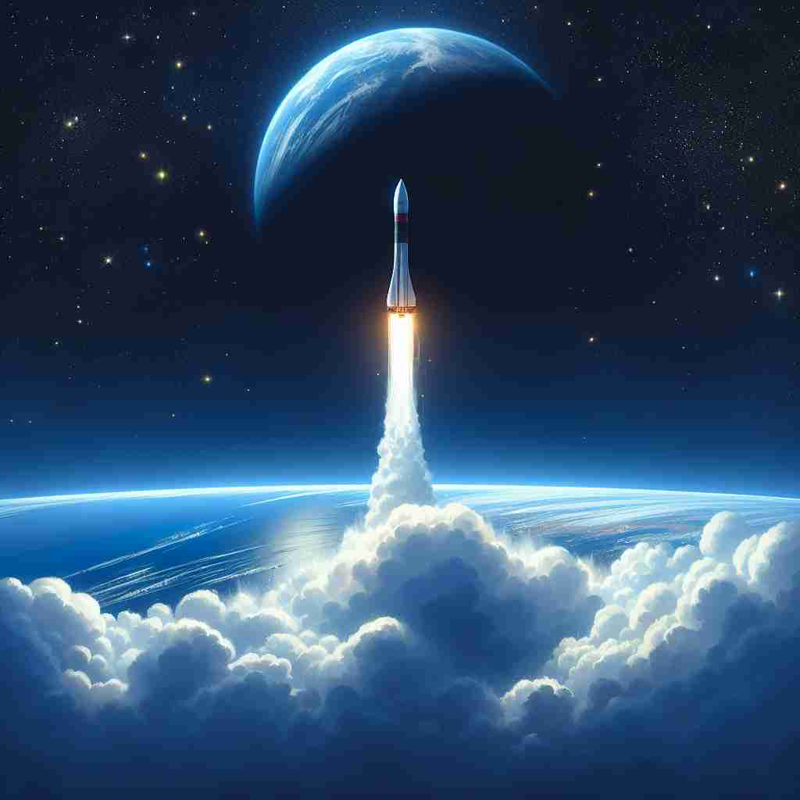
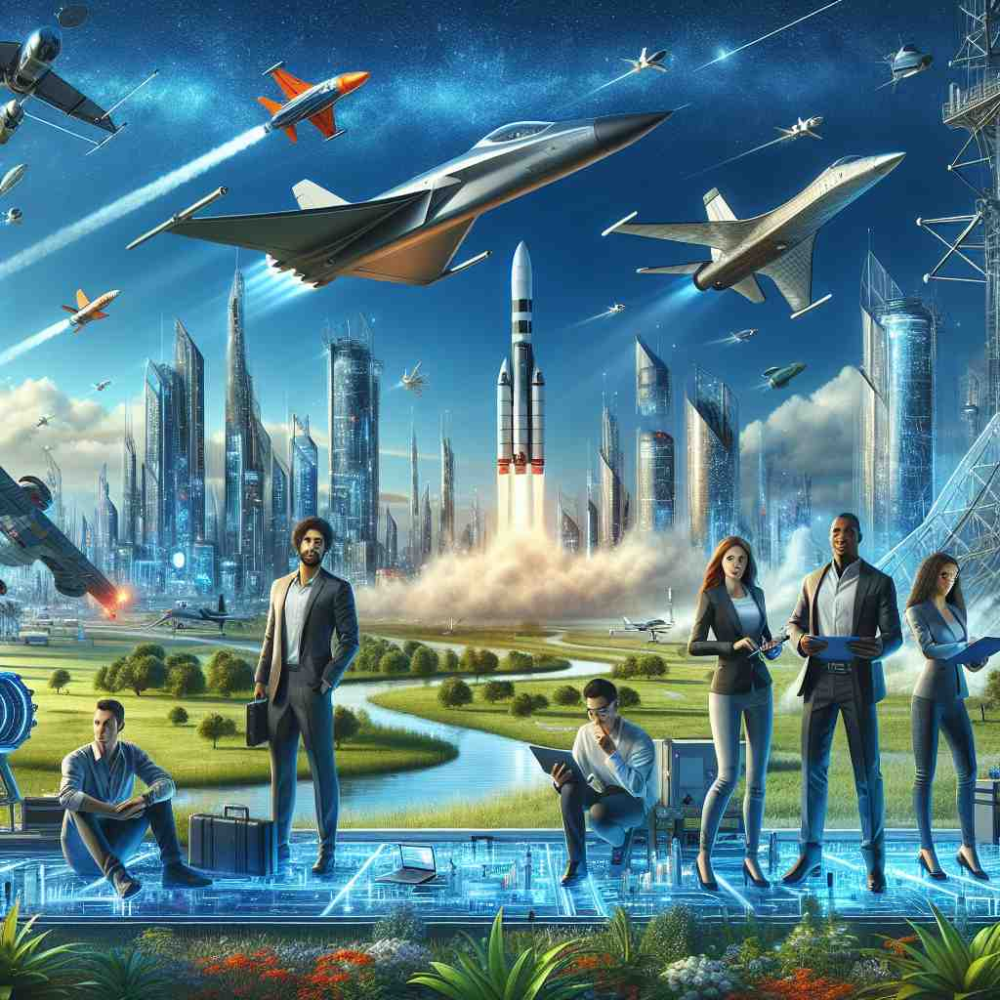

💬 The aerospace industry is rapidly developing new technologies for space travel.

💬 The rocket is part of aerospace exploration to discover new planets.

💬 Modern aerospace technology enables the design of advanced aircraft and spacecraft.
🔈 ['eərəspeɪs]
🗝️ n. the branch of technology and industry concerned with both aviation and space flight
🖼️ 在一个高科技展览会上，各种公司展示他们的最新航空航天技术。公司代表自豪地介绍新一代火箭引擎和无人机。整个展厅充满了创新的气息，展示了'aerospace'作为一个涉及航空和太空飞行的技术和工业领域的含义。
🔍 aerospace 这个词由 'aero'（空气）和 'space'（空间）组合而成。核心含义是关于航空和航天的技术与产业。想象一条从地面延伸到外太空的线，这条线上的所有活动和研究都属于 aerospace 的范畴。无论是形容词还是名词用法，都与这个核心概念紧密相连，涵盖了从飞机到宇宙飞船的广泛领域。
💬 The aerospace industry is rapidly developing new technologies for space travel.
💬 The rocket is part of aerospace exploration to discover new planets.
💬 Modern aerospace technology enables the design of advanced aircraft and spacecraft.
🌳 由词根 "aero-"（与空气相关）和 "space"（空间）组成，用于描述与大气层和太空有关的科学和技术领域。
💡 记忆 "aerospace" 时，可以把它分成 "aero"（空气）和 "space"（空间），联想到这个词涉及的领域从地球大气层延伸至外太空。这样能够帮助理解其涵盖的广泛范围。
🗝️ adj. of or relating to aircraft and spacecraft
🖼️ 在一个大学的航天工程课上，教授在讲解最新的'aerospace'材料，这些材料可以大大减轻飞行器的重量，同时提高它们的耐用性。学生们在专注地听课，不时记下笔记，展示了'aerospace'与飞机和航天器相关的含义。
💬 The company specializes in aerospace engineering.
❓ 描述与航空航天相关的事物
🗝️ n. the Earth's atmosphere and the space beyond it, considered as a whole
🖼️ 在一个天文观测营地，天文学家们聚集在一起，讨论地球大气层与外层空间的关系。他们仰望夜空，通过望远镜观测星星，同时谈论着'aerospace'的广阔无边，涵盖着地球的大气层和超越它的神秘宇宙。
💬 Satellites in aerospace provide crucial data for weather forecasting.
❓ 扩展到包括整个大气层和外层空间